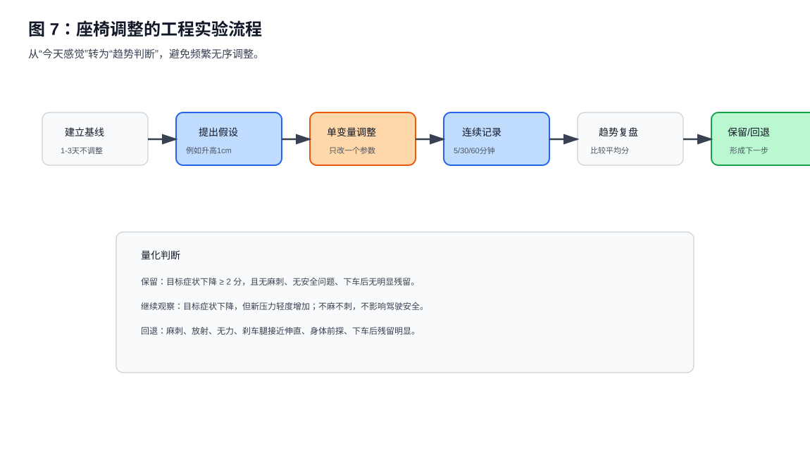

第九章 实验系统与量化记录¶
本章核心观点：驾驶座椅调整不是一次性找到“完美位置”，而是一个小步实验、连续记录、趋势判断、保留或回退的工程过程。没有记录，就无法区分真实改善、短期适应和压力转移。
9.1 为什么需要实验系统¶
很多驾驶者调座椅时会出现这种循环：
今天坐骨疼
↓
调高一点
↓
坐骨好了，大腿紧
↓
调低一点
↓
大腿好了，坐骨又疼
↓
再调靠背
↓
腰又不舒服
这种循环的本质不是“不会调”，而是没有建立实验系统。
没有记录时，大脑会放大最近一次不适，忽略之前的改善。例如：
- 坐骨单点疼已经从 7 分降到 3 分；
- 但大腿压力从 2 分升到 5 分；
- 你可能会觉得“又失败了”；
- 实际上可能是压力从高峰值区域转移到了更大接触面积。
所以，座椅调节需要从“感觉驱动”转成“记录驱动”。

真实记录不一定要复杂。关键是把座椅变化、驾驶时间、症状评分和第二天反馈放在同一个视图里，方便看趋势，而不是被单次体感带着走。
9.2 什么是一次有效座椅实验¶
一次有效实验必须满足五个条件：
-
只改变一个变量
例如只升高 1 cm，不同时改变前后、靠背和腰托。 -
有明确假设
例如：升高 1 cm 会减轻坐骨两侧软组织挤压。 -
有观察指标
至少记录坐骨、两侧挤压、大腿后侧、右腿疲劳、腰背贴合。 -
有时间维度
记录 5 分钟、30 分钟、60 分钟、下车后和第二天。 -
有保留或回退条件
不是靠“今天感觉不错”决定，而是根据评分和风险信号判断。
格式可以写成：
实验名称：座椅整体升高 1 cm
假设：
升高后骨盆更接近中立，坐骨两侧软组织挤压下降。
观察指标：
坐骨单点疼、两侧挤压、大腿后侧紧硬、麻刺、右腿疲劳。
保留条件：
两侧挤压下降 ≥ 2 分，且无麻刺、无刹车安全问题。
回退条件：
出现麻刺、右腿控制变差、坐骨单点疼复发。
9.3 记录哪些数据¶
本项目把数据分成三类。
第一类：座椅设置数据¶
记录每次座椅变化：
- 高度变化；
- 前后变化；
- 前沿变化；
- 靠背变化；
- 腰托变化；
- 方向盘变化；
- 脚跟位置变化。
这些记录放在：
experiments/templates/seat_adjustment_events.csv
第二类：驾驶症状数据¶
每次驾驶后记录：
- 驾驶时间；
- 路况；
- 是否拥堵；
- 坐骨单点疼；
- 坐骨两侧挤压；
- 大腿根压力；
- 大腿后侧紧硬；
- 麻刺；
- 右腿油门疲劳；
- 腰背贴合；
- 肩膀贴合；
- 下车后残留。
这些记录放在：
experiments/templates/driver_daily_log.csv
第三类：办公与身体状态数据¶
如果办公椅也有类似感觉，就必须记录：
- 当天最长连续久坐时间；
- 起身次数；
- 是否做拉伸；
- 腘绳肌紧硬评分；
- 臀部紧张评分；
- 办公椅坐骨两侧挤压；
- 是否骑车或运动；
- 睡眠质量。
这些记录放在：
experiments/templates/office_rehab_daily_log.csv
9.4 0 到 10 分评分规则¶
为了避免“有点疼”“很明显”“还行”这种模糊描述，建议统一使用 0 到 10 分。
| 分数 | 含义 |
|---|---|
| 0 | 完全无感觉 |
| 1-2 | 轻微存在感，可忽略 |
| 3-4 | 明显，但不影响驾驶 |
| 5-6 | 明显，需要主动调整姿势 |
| 7-8 | 难以忍受，影响驾驶 |
| 9-10 | 应停止驾驶或立即处理 |
关键是保持一致。比如“坐骨两侧软组织挤压 5 分”应该在不同日期代表近似程度。
9.5 不要只看当天，要看趋势¶
座椅调整后，第一天的感觉可能不稳定。原因包括：
- 身体还没适应新压力分布；
- 前一天久坐或运动影响；
- 驾驶路况不同；
- 注意力更集中在新感觉上；
- 组织状态当天波动。
所以建议至少看：
连续 3 次驾驶
或
连续 7 天趋势
判断方向：
| 趋势 | 判断 |
|---|---|
| 目标症状下降，风险症状不升 | 保留 |
| 目标症状下降，但新症状明显上升 | 继续观察或微调 |
| 麻刺、放射、无力出现 | 回退并评估 |
| 评分上下波动但均值下降 | 方向可能正确 |
| 工作日变差、周末变好 | 办公久坐参与明显 |
9.6 保留、回退、继续观察的量化标准¶
可以保留¶
满足以下多数条件：
目标症状下降 ≥ 2 分
+
无麻刺 / 过电感
+
刹车安全不受影响
+
腰背和肩膀仍贴合
+
下车后无明显残留
例如：
坐骨两侧挤压：6 → 3
大腿后侧紧硬：5 → 5
麻刺：0
右腿疲劳：4 → 4
结论：可以保留
继续观察¶
适用于：
目标症状下降
+
新压力上升 1-2 分
+
无麻刺
+
不影响驾驶安全
例如：
坐骨单点疼：6 → 2
大腿压力：2 → 4
麻刺：0
结论：继续观察 2 次驾驶
需要回退¶
出现以下任一情况：
麻刺 / 过电感
放射痛
无力
刹车腿接近伸直
身体前探
坐骨单点疼明显复发
下车后残留明显
9.7 14 天实验计划¶
当前案例建议使用 14 天实验周期，而不是每天乱调。
第 1-3 天：基线记录¶
不调整座椅，只记录：
- 当前设置；
- 30 / 60 分钟症状；
- 办公久坐时间；
- 是否拉伸；
- 下车后和第二天反馈。
目的：
先知道“不调整时自然波动有多大”。
第 4-6 天：实验 A，座椅升高 1 cm¶
只改变高度。
重点观察：
- 坐骨两侧软组织挤压；
- 坐骨单点疼是否复发；
- 大腿后侧是否变紧或麻；
- 脚跟是否稳定；
- 刹车是否安全。
第 7 天：复盘¶
用前三天基线 vs 升高后的数据比较。
如果：
- 两侧挤压下降；
- 无麻刺；
- 右腿控制不差；
则保留高度。
第 8-10 天：实验 B，后移 1 cm¶
只改变前后位置。
重点观察：
- 大腿根压力；
- 大腿后侧紧硬；
- 右腿踩油门疲劳；
- 刹车安全；
- 腰背是否仍贴合。
第 11 天：复盘¶
判断后移是否保留。
第 12-14 天：稳定验证¶
不再调整。观察设置是否稳定：
- 工作日是否仍加重；
- 办公椅是否改善；
- 康复动作是否降低第二天反应；
- 评分是否整体下降。
9.8 当前案例的指标优先级¶
当前案例最应该跟踪的不是所有指标，而是六个核心指标：
- 坐骨单点疼；
- 坐骨两侧软组织挤压；
- 大腿后侧紧硬；
- 大腿后侧麻刺；
- 右腿油门疲劳；
- 下车后残留。
权重建议：
| 指标 | 权重 | 原因 |
|---|---|---|
| 麻刺 / 过电感 | 最高 | 风险信号 |
| 刹车安全 | 最高 | 驾驶安全 |
| 坐骨单点疼 | 高 | 峰值压强 |
| 两侧软组织挤压 | 高 | 当前主要症状 |
| 大腿后侧紧硬 | 中高 | 组织状态 + 座椅压力 |
| 右腿疲劳 | 中高 | 踏板几何 |
| 腰背贴合 | 中 | 支撑稳定性 |
9.9 如何用 CSV 记录¶
本项目提供了四个 CSV 模板：
experiments/templates/driver_daily_log.csv
experiments/templates/seat_adjustment_events.csv
experiments/templates/office_rehab_daily_log.csv
experiments/templates/symptom_score_reference.csv
建议复制到：
experiments/data/
例如：
mkdir experiments\data
copy experiments\templates\driver_daily_log.csv experiments\data\driver_daily_log.csv
copy experiments\templates\seat_adjustment_events.csv experiments\data\seat_adjustment_events.csv
copy experiments\templates\office_rehab_daily_log.csv experiments\data\office_rehab_daily_log.csv
之后每天追加一行数据。
9.10 如何生成趋势图¶
本项目提供脚本：
scripts/analyze_experiments.py
使用方式：
python scripts\analyze_experiments.py
脚本默认读取：
experiments/data/
并输出：
experiments/output/
包括：
- 症状趋势图；
- 最近 7 天平均分；
- 调整事件时间线；
- summary.md 总结。
如果暂时不会跑脚本，也没关系。先把 CSV 数据记录起来，后续随时可以分析。
9.11 本章小结¶
座椅调节不是一次性动作，而是一个工程实验系统。
完整流程是：
建立基线
↓
提出假设
↓
只调整一个变量
↓
连续记录 2-3 次
↓
比较目标症状与风险症状
↓
保留 / 回退 / 继续观察
当前项目从 V0.6 开始，已经具备：
- 文档体系；
- 症状决策树；
- 康复与办公椅联动；
- CSV 记录模板；
- 自动分析脚本；
- 14 天实验计划。
下一步不是继续频繁调整，而是用数据证明：哪个设置真正提高了驾驶耐受性，哪个设置只是把压力搬到了另一个位置。